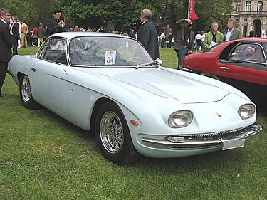
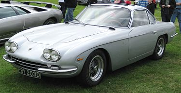
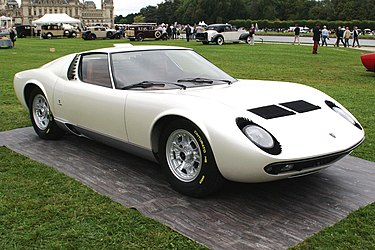
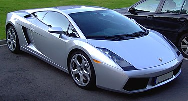

Automobili Lamborghini S.p.A.; укр. Лямборґіні) — італійська компанія, виробник спортивних авто, а також тракторів Lamborghini Trattori. Знаходиться у комуні Сант'Агата-Болоньєзе, біля Болоньї. Компанія заснована у 1963 році Ферруччо Ламборгіні. На той час він вже був засновником та власником кількох компаній. Сам Ламборґіні після заснування компанії володів нею ще 9 років. Теперішній власник компанії — Audi.
Історія компанії
Власники Lamborghini :
- Жорж-Анрі Росетті і Рене Ламер
- Патрік Мімран
- Chrysler
- MegaTech Ltd
- Audi AG
Є кілька версій щодо причин, з яких Ламборґіні 1962 року заснував власну фірму. Всі вони зводяться до конфлікту між Енцо Феррарі (власником компанії Ferrari) і Ламборґіні. Найпопулярнішою є версія сина Ферруччо Ламборґіні, за якою його батько прибув на фабрику до Енцо Феррарі поскаржитися на якість зчеплення у своєму автомобілі Ferrari 250 GT. Енцо відправив Ламборґіні назад з побажанням і далі займатися тракторами, бо, мовляв, на автомобілях (тим більше спортивних) Ламборґіні не розуміється. Ламборґіні повернувся на свою фабрику, розібрав трансмісію у власному Ferrari 250 GT і виявив, що виробник багатьох деталей той самий, що й у тракторах «Ламборґіні». На своїх складах він знайшов відповідну заміну, і проблему було вирішено.
Автомобільна фірма «Ламборґіні» була створена як дочірня фірма компанії Lamborghini Trattori S.p.A. Вона працює в селищі Сант-Аґата Болоньєзе (Sant'Agata Bolognese) біля Болоньї.
-
Lamborghini 350 GT
 -
Lamborghini 400 GT
 -
Lamborghini Miura
 -
Lamborghini Gallardo

Внаслідок нафтової кризи 1970-х рр. продажі спортивних автомобілів різко впали. Компанія «Ламборґіні», в числі інших, зіткнулася з фінансовими проблемами, постачання запасних частин були зірвані. Замовлення на автомобілі були розписані на два роки вперед, і покупці були дуже незадоволені таким терміном очікування. Урешті-решт 1978 італійський суд оголосив компанію банкрутом, і 1981 її купили брати Жан і Патрік Мімрани зі Швейцарії.
Автомобілі «Ламборґіні» є одними з найбільш потужних, дорогих і ексклюзивних автомобілів серійного збирання. Крім того, різні моделі мають свої унікальні технічні новації, наприклад, кузов із вуглеволокна чи високотехнологічні двигуни V10.